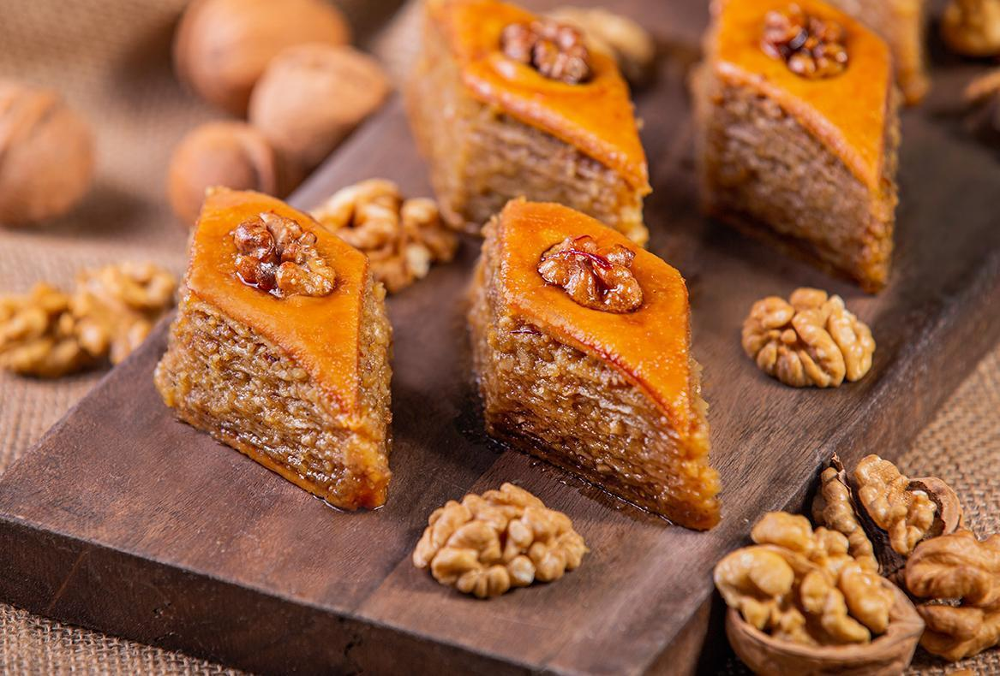

Baklava

Description
Baklava is a layered pastry dessert, filled with chopped nuts, and sweetened with syrup or honey. It was one of the most popular sweet pastries of Ottoman cuisine.
The pre-Ottoman origin of the dish is unknown, but in modern times, it is a common dessert of Turkish, Iranian and Arab cuisines, and other countries of the Levant and Maghreb, along with the South Caucasus, Balkans, and Central Asia.
ingredients
Dough
- 500ml milk
- 150ml milk for yeast
- 800-1000g wheat flour
- 200g melted butter
- 30g yeast
- 1 egg
- 1 tablespoon sugar
- salt
Filling
- 500g crushed walnuts
- 500g sugar
- 10g cardamon
Syrup
- 1cup water
- 1cup sugar
- 2 tablespoons honey
- 1 tablespoon lemon juice
Separately
Coating
Time 40mins. Bake at: 200C
Steps
- Add the yeast to warm milk (not too hot!) with the salt and sugar. Mix it all well into 10 spoons of flour.
Melt butter and add the 500ml milk. Mix it all well with the rest of the flour, yeast milk mix and the egg into a soft dough. Let it rise for about 50mins in a warm place.
- Mix ingredients for the filling together
- When dough is ready, divide it into 13 equal pieces. Set two of them aside, merge them together for the top layer later.
- Roll the dough very thin. Layer the first 2 dough only with brushed butter without filling.
After the second layer you can begin to brush with butter and put the filling on it, repeat until the last layer which will be the 2 dough we set apart previously.
Cut into diamong shames. Coat the top with egg yolk and place a walnut in the center of each piece.
- Bake for 10 minutes at 200C. Pour the butter over it and let it bake for another 20 minutes.
- Heat the ingredients for the syrup until they start boiling. Add the lemon juice. Pour the entire mix over the baklava and bake it for another 10 minutes.
- Enjoy!